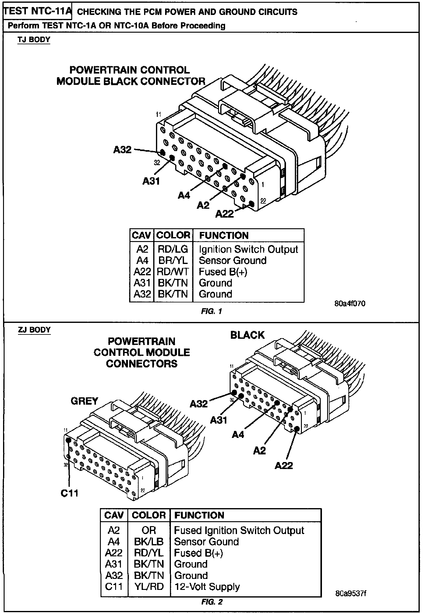
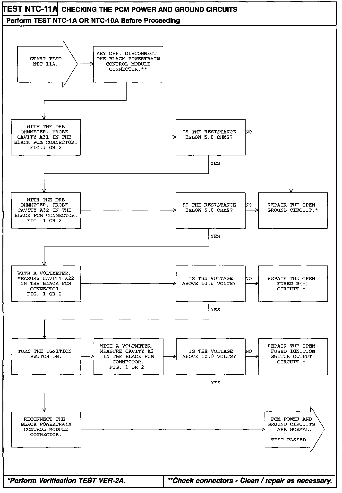

Operation CHARM
: Car repair manuals for everyone.
Русский
Home
>>
Jeep
>>
1997
>>
Grand Cherokee 4WD L6-4.0L VIN S
>>
Repair and Diagnosis
>>
Powertrain Management
>>
Computers and Control Systems
>>
Testing and Inspection
>>
Symptom Related Diagnostic Procedures
>>
No Trouble Code (NTC) Tests
>>
NTC-11A Checking the PCM Power and Ground Circuits
NTC-11A Checking the PCM Power and Ground Circuits

